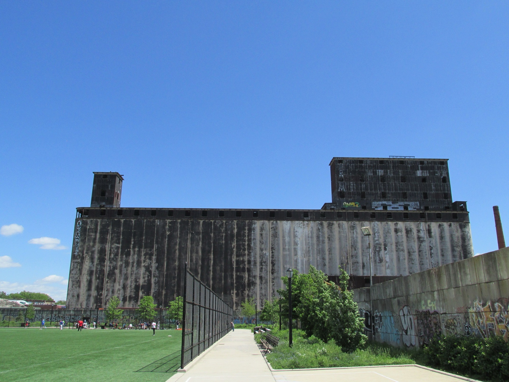
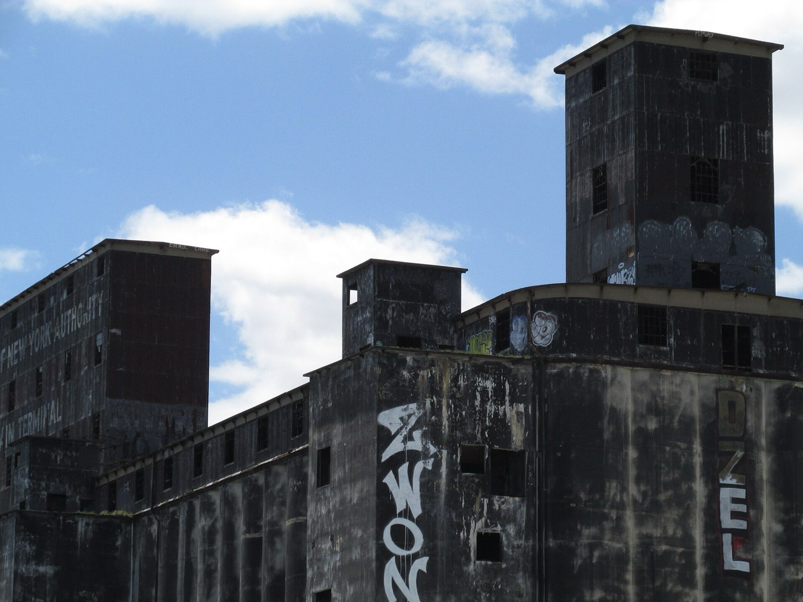

Gowanus Bay Terminal
A 1922 grain terminal on the Red Hook waterfront, and today a working maritime site, film location and event venue.

- 1922
- Opened September 1
- 12
- Stories of reinforced concrete
- 429 ft
- Length of the grain elevator
- 46
- Acres acquired by the family in 1997
Working waterfront
Gowanus Bay Terminal, GBX, sits in Red Hook between the mouth of the Gowanus Canal and Erie Basin.
At its center stands the Red Hook Grain Terminal, the neighborhood’s tallest structure and one of Brooklyn’s most recognizable silhouettes, visible from the Gowanus Expressway and the elevated F and G trains.
Today GBX is a multi-user maritime and industrial facility. Its piers and yards serve working tenants, while the terminal’s monumental concrete draws filmmakers, photographers, artists and event producers.
